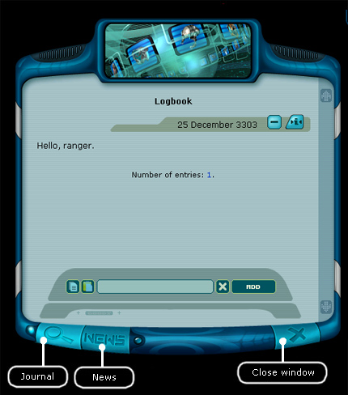
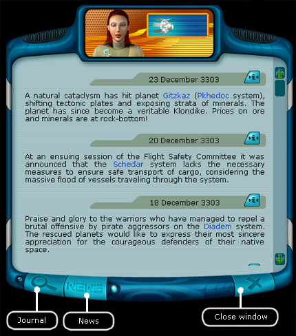

Ranger manual > Flight log (F1)
|
Ranger manual > Flight log (F1)
|
| Flight log (F1) The flight log allows to make your own entries and save news. In order to make an entry: 1. Enter your text into the window. 2. Press the key 'Add'.  Hint. To save the entry on the navigation panel, click the icon In order to delete an entry from the flight log, click the icon , located on the strip together with the date of the entry. Note. In order to delete all entries in the log press the following key combination Ctrl+Delete. In order to dump the flight log entries into a .txt file press Ctrl+Ins. Press the keys Shift + Backspace to delete the entire text in the input window. Additionally when you land on a planet or a base the flight log downloads the hot news from the Information center, so you could later review them (the maximal amount of news is preset in the game settings). In order to switch into the news mode: • Press the 'NEWS' key in the bottom part of the window.  Note. In order to delete all news from the flight log, press Ctrl+Delete combination of key being in the space or on an uninhabited planet. To switch to the flight log mode: • Press the button with the 'Magnifying glass' icon in the bottom part of the window. |